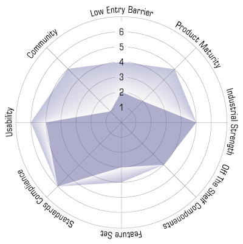

Apache Lenya: Roadmap
Positioning Diagram
The Lenya roadmap is determined by the Lenya positioning diagram. It specifies the priorities
and orientation, and shows areas for futher development. The 1.0 release marks the point
where Lenya was donated to the Apache foundation. Subsequent releases have been under the Apache
umbrella. Items in bold type mark completed items.

The positioning diagram defines 8 areas, with a relative weight of 1-7. The current Lenya code base is
represented by the dark blue area, while the light blue area indicates focus areas for future versions.
The positioning diagram is based on a hard look at where we currently stand. The various areas are defined below:
-
Community
How viable is the community supporting the product? Are there independent contributors? How active are mailing lists, web sites? Is the community healthy, friendly and welcoming to newcomers?
-
Low Entry Barrier
How easy is it to get started? Is the product a turn-key solution with immediate value after download? How consistent is the documentation, how hard is it to familiarize oneself with the codebase?
-
Product Maturity
How robust is the underlying code? Are sound software engineering practices in use? Is the architecture clean and consistent? Are changes to the code regression-tested?
-
Industrial Strength
How much does the product scale? How flexible and stable is the product, how well does it perform? Is it secure?
-
Off The Shelf Components
How much does the product make use of standard components? Is the architecture modular to accomodate external code?
-
Feature Set
Does the product have a conservative feature set, or does it have many bells and whistles?
-
Standards Compliance
How much does the product use and interoperate with standards?
-
Usability
Is the user interface understandable for non-technical persons? Is it consistent? Does it follow usability best practice?
Releases
Three releases are planned: 1.0, 1.2 and 1.4, with the possibility of smaller maintenance releases in between. Even numbers are stable releases, odd numbers development releases. Minor releases are used for bug fixes, e.g. 1.2.2.
- Release 1.0 Summer 2003
- Release 1.2 Fall 2003
- Release 1.4 Summer 2005
Long-term Goals
- Improve communication and collaboration with sister Apache projects
Release 1.0
Community
- Migrate mailing lists / CVS to Apache
- Provide scratchpad for third party publications
Low Entry Barrier
- Provide Class Diagrams
- Disentangle CMS and publications
- Create outline of new documentation
- Provide default publication
Product Maturity
- Refactor code base
- Remove dead code
- Provide unit tests for core classes
- Simplify directory structure
- Provide default implementations in root sitemap, with overriding capability
Industrial Strength
- Update to current Cocoon 2.1 snapshot
- Load test and provide benchmarks
- Add Unit test framework
- Disentangle CMS and Cocoon
Off The Shelf Components
- Update from JDK 1.3.1 to 1.4
- Replace DOM4J
Feature Set
- Make windows version usable again
- Finish Lucene integration
- Bugfree Revision Controller
Standards Compliance
- Enforce Avalon coding standards
Usability
- Standardize CMS screens
- Standardize Lenya menus
Release 1.2
Community
- Get additional commiters on board
- Define scope and collaboration with the Forrest project
Low Entry Barrier
- Improve and standardize templating (XHTML)
- Allow for documentation annotation (like php.net)
- Write a publication HOWTO
- Maintain a FAQ
- Elminate redundancies between authoring and live areas
- Write Lenya Tutorials
Product Maturity
- omplete JavaDoc
- Unify CMS URIs
- Standardize sitemaps
- Work out upgrade schedule for dependent components (Cocoon etc)
Industrial Strength
- Substantial Unit test coverage
- Add web tests
Off The Shelf Components
- Migrate Lenya xinclude processor to Cocoon (or vice versa)
Feature Set
- Integrate Repository
- Implement workflow engine
- Implement generic sitetree navigation framework
- Integrate HTML Form Editor
- Provide GUI for user administration
Standards Compliance
- Provide LDAP authentication
Usability
- Improve Lenya menu to float across the page
- Improve CMS screens with help tooltips
- Improve Bitflux / Xopus integration
Release 1.4
Community
- Work with OSCOM.org on CMS standards
- Organize Lenya Sprints
- Leverage other Apache projects
Low Entry Barrier
- Improve documentation
Product Maturity
- Rewrite Resource Creation Framework
- Rewrite Publishing / Replication Framework
- Complete Unit test coverage
- Complete JavaDoc
Industrial Strength
- Improve reverse proxying
- Research advanced caching strategies
- Implement transaction management
Off The Shelf Components
- Consolidate Authentication and Authorization components
Feature Set
- Provide (Open) Office integration
- Implement link management
- Implement multilingual capabilities
Standards Compliance
- Refine and review standards support
Usability
- Provide administration GUI
- Complete the move to an in-place UI paradigm